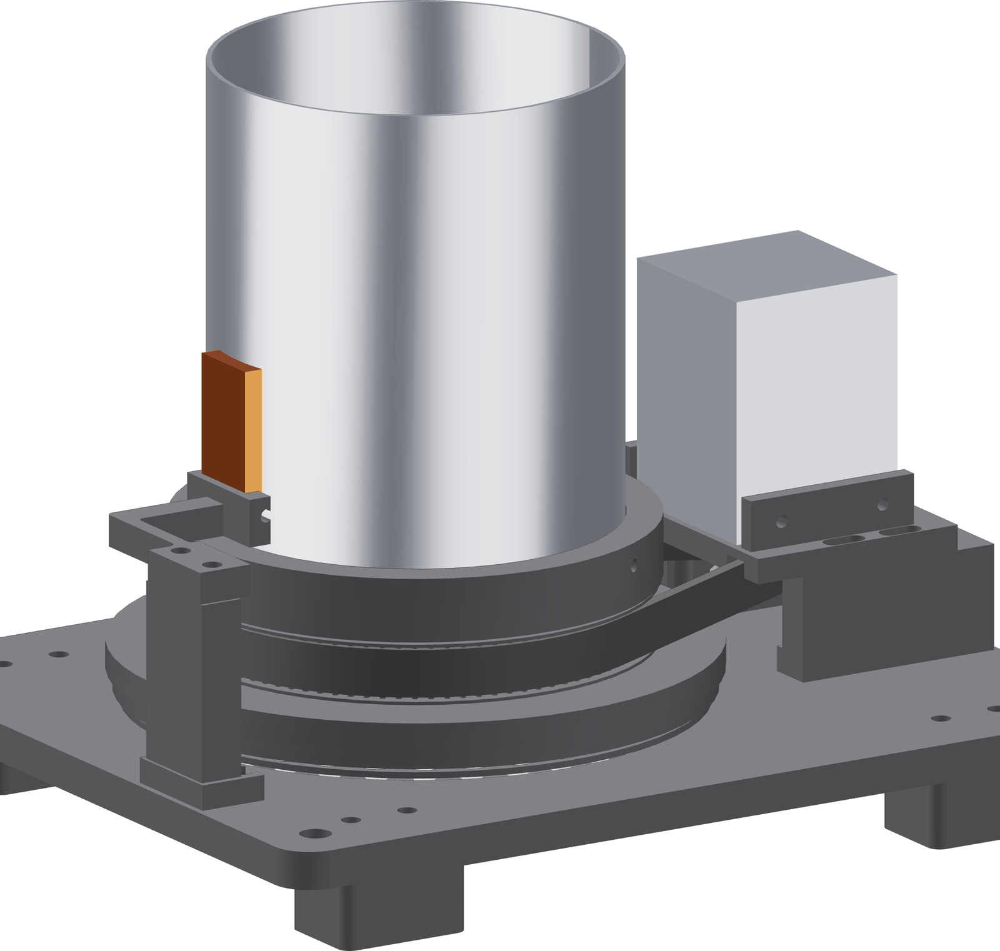

The rehearsal
The last gate, and the only one that involves the whole cell. Everything present, everything in position, laser disabled.

- Bring everything to the bench that will be there for a real weld: the head, the wire guide, the purge hose, the work lead, and you in your working position.
- Confirm the laser is disabled.
- Set mode lap and run one complete 380° lap with the pedal.
- Watch the belt for the whole lap. Watch the tube for the whole lap.
- Move your hands and the head through the arc you will actually use while it turns.
Gate — nothing enters and nothing wraps
Nothing goes into the belt path. Nothing wraps around the turning tube — not the purge hose, not the work lead, not a sleeve. Rotation is an additional bench motion and it gets its own pinch-point clearance before the laser is enabled.
Nothing on this page relaxes anything
Laser guarding, eye protection, extraction, argon-asphyxiation control and pressure-vessel inspection all stand exactly as they did. This gate is in addition to them.